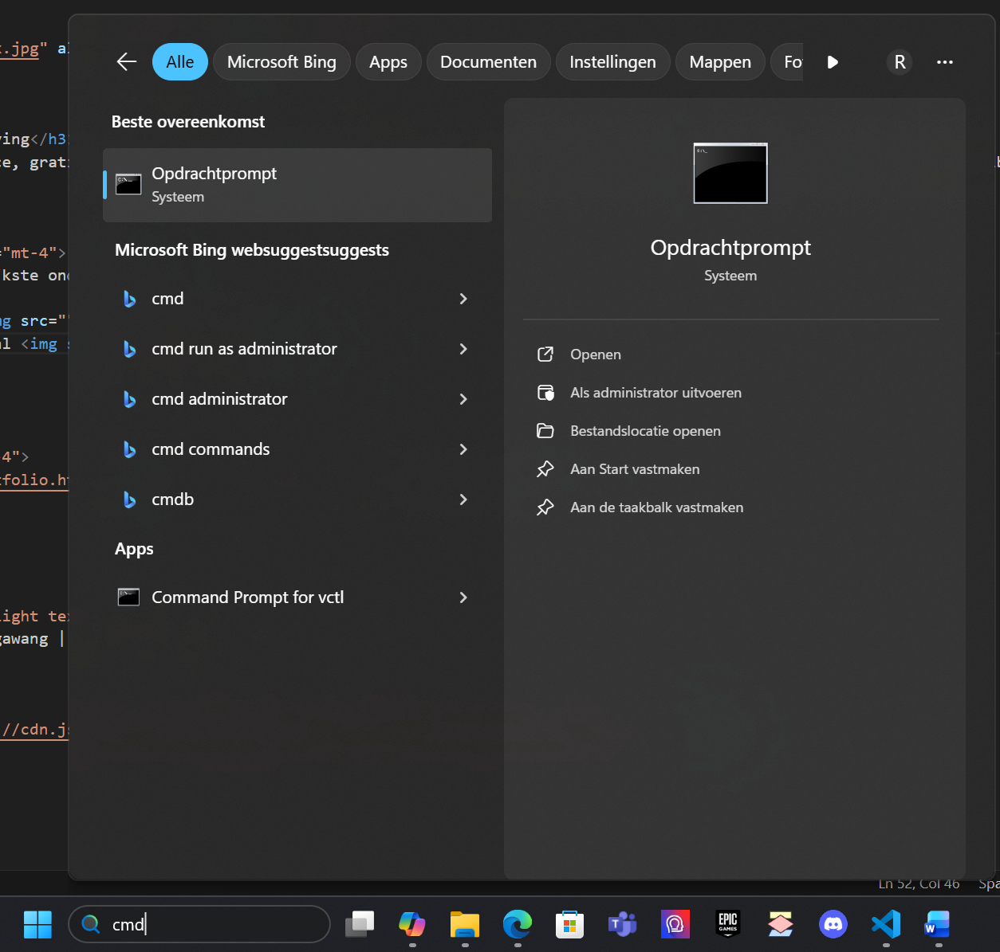
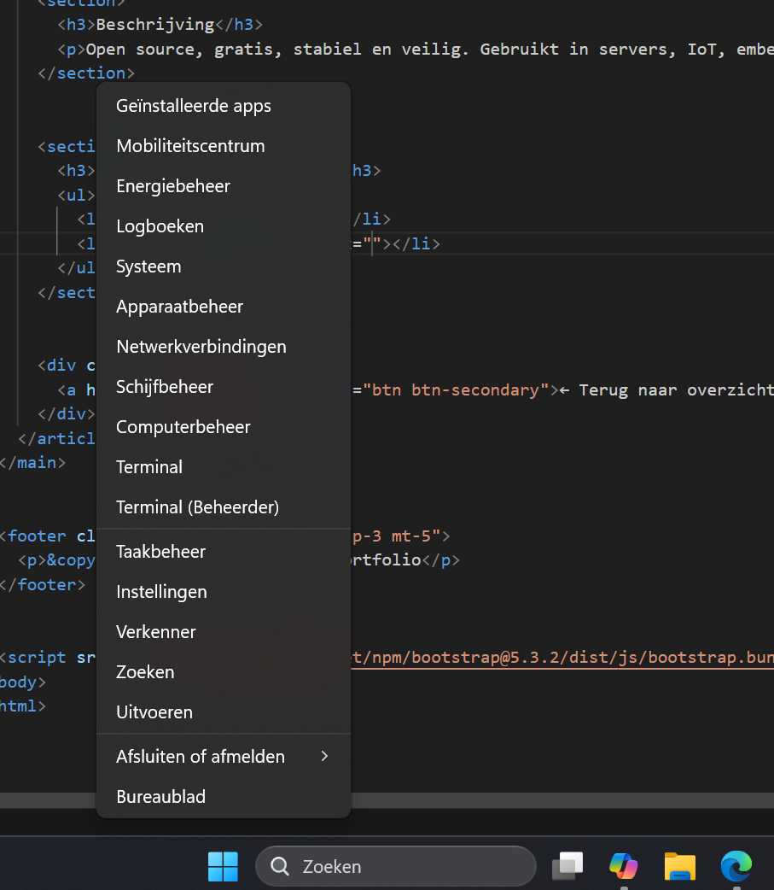

Linux
Categorie: taakbeheerder | Gepubliceerd: november 2025
Beschrijving
Open source, gratis, stabiel en veilig. Gebruikt in servers, IoT, embedded systemen en cloudomgevingen. Bekende distributies: Ubuntu, Debian, Fedora, Linux Mint.
Belangrijkste kenis
- Cmd = CMD laat je bestanden beheren, programmas starten, netwerkinstellingen bekijken en systeemtaken uitvoeren — allemaal zonder muis, puur via commando,s zoals dir, cd, ipconfig, ping, enz.
- terminal = Je gebruikt de terminal om bestanden te beheren, programma,s uit te voeren, scripts te starten en systeeminstellingen te controleren — allemaal zonder muis, puur via commando,s zoals ls, cd, mkdir, sudo, enz.
- CMD en Terminal lijken op elkaar, maar ze zijn niet hetzelfde.
- Beide zijn tekstinterfaces om je computer te besturen, maar Terminal is krachtiger en flexibeler, vooral voor IT, scripting en Linux-omgevingen. CMD is eenvoudiger en beperkt tot Windows.Wil je een visuele vergelijking of een oefening waarin je hetzelfde commando in beide uitvoert?